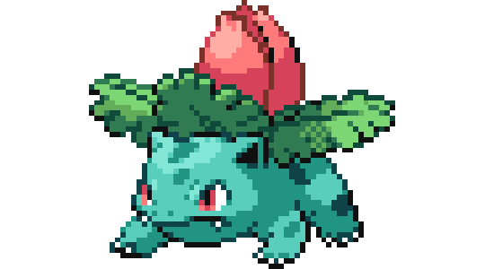

bulbasaur #0001

é um Pokémon tipo duplo Planta/Veneno introduzido na Geração I. Ele evolui para Ivysaur começando no nível 16, que evolui para Venusaur começando no nível 32.Ele é um dos três Pokémon iniciantes da região de Kanto, assim com Charmander e Squirtle. Ele pode ser escolhido pelo jogador em Pokémon Red, Green, e Blue assim como em Pokémon FireRed e LeafGreen, seus remakes
ivysaur #0002
A aparencia de Ivysaur é muito semelhante ao de sua forma pré-evoluída, Bulbasaur. Ele ainda mantém a pele azul-turquesa e manchas, juntamente com os seus olhos vermelhos. Principais presas de Ivysaur agora são maiores e são visíveis do lado de fora da boca. Além disso, suas orelhas estão agora escurecidas para preto no centro. A mudança mais notável é que a lâmpada está começando a florescer, com pétalas de rosa visíveis, e grandes folhas na parte inferior.
venusaur #0003

Venusaur é um grande dinossauro, como Pokémon, que é um pouco semelhante em aparência a suas formas pré-evoluídos, Ivysaur e Bulbasaur. Sua pele ainda mantém uma cor turquesa claro, mas já não tem os pontos, e parece mais áspera e escamosa com altos aqui e ali. O ex-bulbo em suas costas agora totalmente floresceu em uma flor gigante e suas orelhas têm iluminadas também.
charmander #0004

Charmander é facilmente o mais gentil e bem comportado de sua linha evolutiva. Seus sentimentos e emoções podem ser lidos pela chama na ponta de sua cauda. Ela explode em fúria quando ele está com raiva, e vai piscar e ficar pequena e fraca caso esteja doente ou ferido. Se rosnar, significa que está com raiva ou prestes a atacar.
charmeleon #0005

Charmeleon é um pequeno bípede, dinossauro-como Pokémon com uma aparência semelhante à de sua forma pré-evoluída, Charmander. Charmeleon Charmander difere na medida em que tem uma cor muito mais escura da pele, uma estrutura maior, garras e uma saliência de chifre-como na parte posterior da cabeça, semelhante à de um ornithopod
charizard #0006

Ao contrário de suas pré-evoluções, tem asas que lhe permite voar, é um pokemon muito parecido com um dragão. Como suas formas anteriores, é bípede e tem uma longa cauda com uma chama que só se apaga quando ele morre. Tem três garras extremamente afiadas, dígitos distintos, um longo pescoço, e dois chifres salientes na parte de trás de sua cabeça. A frente de suas duas asas é azul-petróleo, enquanto a traseira é laranja como a maior parte de seu corpo. Embora pouco visível, a iris de Charizard é azul de cor clara. Sua barriga e parte inferior das patas são de cor creme.
squirtle #0007

Squirtle é um pequeno Pokémon, azul-claro com uma aparência semelhante ao de uma tartaruga. Como tartarugas, Squirtle tem um escudo que cobre seu corpo com orifícios que permitem que seus membros, cauda e cabeça para ser exposto. Ao contrário de uma tartaruga, Squirtle é normalmente bípede.
wartotle #0008

wartortle são pequenos, bípede, tartaruga como Pokémon com uma aparência semelhante à da sua forma pré-evoluída, Squirtle. Algumas diferenças são que Wartortles desenvolveram garras e os dentes mais nítidas e maiores. Suas caudas são maiores e mais macio do que Squirtle e Wartortle de ter desenvolvido grandes orelhas peludas
blastoise #0009

Blastoise é uma grande tartaruga-como Pokémon com algumas características semelhantes de suas formas pré-evoluídas. Blastoise tem um grande corpo azul, barriga de cor creme e um grande escudo marrom aros de branco, com seus canhões de água. É agora mais visivelmente mais volumoso do que suas evoluções anteriores. Como as suas formas pré-evoluídas. Blastoise tem um invólucro que cobre o seu corpo todo, o que pode também ser retirada para. Ao contrário do que Squirtle e Wartortle, grandes canhões de água da Blastoise estão localizadas nos lados superiores esquerdo e direito. A água que sai dos canhões são capazes de perfurar buracos através de aço de espessura.
caterpie #0010

Caterpie é um Pokémon larva verde com marcas amarelas em forma de anel para baixo dos lados de seu corpo. Sua característica mais notável é a brilhante antena vermelha em sua cabeça, a partir do qual ele libera um cheiro para repelir predadores. Esta e as grandes marcas dos olhos em forma de ajudar a assustar predadores. Ele compartilha muitas características com outros Pokémon larva como Weedle, Wurmple e Sewaddle.